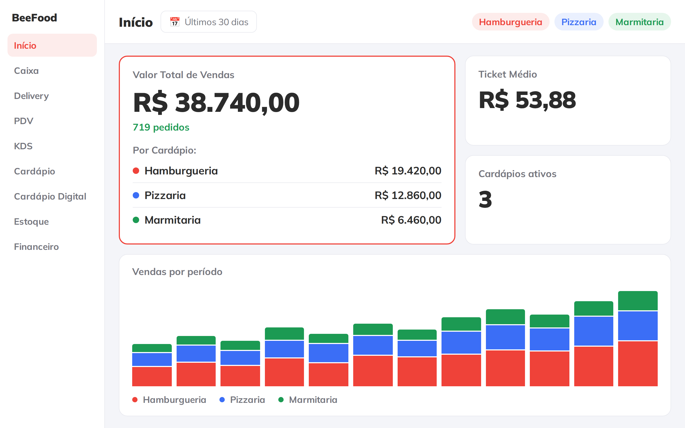
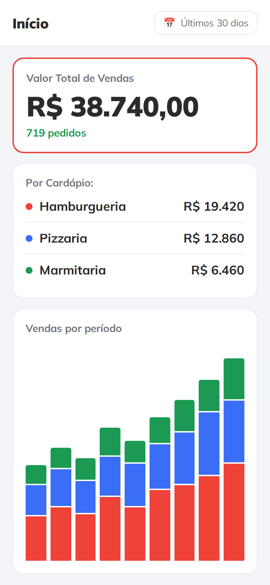

<!-- A capa NOMEIA o assunto, e o assunto aqui e dark kitchen — nao "multimarcas".
     A primeira versao dizia so "Varias marcas num painel so", e quem rola o feed
     nao tem como saber que aquilo e sobre dark kitchen: multimarca acontece em
     franquia, em praca de alimentacao, em food hall. O tema entra no titulo, e a
     pilula deixa de ser a unica a dizer de que a peca trata.

     O subtitulo termina de dizer o que e uma dark kitchen — sem salao, so
     entrega — em vez de repetir o titulo com outras palavras.

     A CENA, e por que ela existe: a primeira capa era o recorte do cartao de
     vendas, e recorte de tela nao mostra convergencia; mostra o fim dela. O
     assunto e varias marcas CHEGANDO num painel so, e isso e um caminho. Daqui
     saiu o `.origem` / `.fio` / `.selo-ok` do `base.css`.

     Referencia de composicao: a ilustracao do alto de `beefood.com.br/
     sistema-dark-kitchen`, que faz exatamente isso — bolinhas em cima, fios
     tracejados descendo com um visto no meio, e o computador embaixo recebendo
     tudo. Referencia de LAYOUT, como print de manual: nada dela foi recortado.
     O que mudou no caminho: la as bolinhas sao os canais (iFood, 99Food,
     WhatsApp) e aqui sao as MARCAS, porque marca e o assunto desta peca — e a
     cor de cada fio e a cor com que aquela marca aparece no painel embaixo.

     Notebook e celular sangram pela base. O notebook e a mesa do escritorio, o
     celular e o dono entre uma entrega e outra, e os dois mostram o mesmo
     38.740: e o mesmo painel. -->
<div class="slide slide--capa">
  <div class="topo">
    <span class="logo"></span>
    <span class="contador">1 de 7</span>
  </div>

  <div class="pilha g24" style="margin-top: 30px; max-width: 880px">
    <span class="pilula">Dark Kitchen</span>
    <h1 class="titulo titulo--medio">
      A dark kitchen<br>de várias marcas<br>num painel <span class="destaque">só</span>
    </h1>
    <p class="subtitulo">
      Sem salão, só entrega — e cada marca com o seu cardápio e o seu resultado.
    </p>
  </div>

  <!-- A cena. Posicionada em absoluto porque fio tracejado so acerta a bolinha
       de cima e a tampa de baixo com coordenada na mao; no fluxo, qualquer
       quebra de linha do titulo desalinharia tudo. -->
  <div style="position: absolute; left: var(--margem); right: var(--margem);
              top: 612px; bottom: 0; z-index: 1">

    <!-- As tres bolinhas vao em absoluto, e nao em `space-between`: o nome
         embaixo e mais largo que o disco e muda de marca para marca, entao com
         o flex o centro de cada uma cai num lugar diferente do previsto — e fio
         tracejado que nasce 20 px ao lado da bolinha le como risco solto. Aqui
         o centro e numero: 120, 452 e 784 dos 904 px uteis. -->
    <span class="origem" style="--cor: #ff5a50; position: absolute; top: 0;
          left: 120px; transform: translateX(-50%)">
      <span class="origem__disco">🍔</span>
      <span class="origem__nome">Hamburgueria</span>
    </span>
    <span class="origem" style="--cor: #6f97ff; position: absolute; top: 0;
          left: 452px; transform: translateX(-50%)">
      <span class="origem__disco">🍕</span>
      <span class="origem__nome">Pizzaria</span>
    </span>
    <span class="origem" style="--cor: #3ec27a; position: absolute; top: 0;
          left: 784px; transform: translateX(-50%)">
      <span class="origem__disco">🍱</span>
      <span class="origem__nome">Marmitaria</span>
    </span>

    <!-- Cada fio desce da bolinha, vira para o meio e desce de novo atras da
         tampa — duas caixas por lado, uma quina em cada. O do meio desce reto.
         `left: 118` e `right: 118` porque a borda tem 5 px e o centro da
         bolinha esta em 120: a linha precisa cair em cima do centro, nao ao
         lado dele. -->
    <span class="fio fio--vira-direita" style="--cor: #ff5a50;
          left: 118px; top: 190px; width: 110px; height: 82px"></span>
    <span class="fio fio--desce-direita" style="--cor: #ff5a50;
          left: 228px; top: 272px; width: 96px; height: 48px"></span>

    <span class="fio fio--desce" style="--cor: #6f97ff;
          left: 450px; top: 190px; width: 0; height: 130px"></span>

    <span class="fio fio--vira-esquerda" style="--cor: #3ec27a;
          right: 118px; top: 190px; width: 110px; height: 82px"></span>
    <span class="fio fio--desce-esquerda" style="--cor: #3ec27a;
          right: 228px; top: 272px; width: 96px; height: 48px"></span>

    <!-- Os vistos, no meio do trecho horizontal (y = 272, menos os 27 de meio
         selo). O do meio cai na vertical, na mesma altura. -->
    <span class="selo-ok" style="--cor: #ff5a50; left: 194px; top: 245px">&check;</span>
    <span class="selo-ok" style="--cor: #6f97ff; left: 425px; top: 245px">&check;</span>
    <span class="selo-ok" style="--cor: #3ec27a; right: 194px; top: 245px">&check;</span>

    <!-- A tampa comeca em 300: os 20 px finais de cada fio ficam atras dela.

         930 px e a maior largura que cabe SEM cortar o painel na lateral. A
         versao anterior tinha 940 e saia pela direita do slide, e o preco eram
         as pilulas de marca do topo virando `Hamburgueria  Pizzaria  Mar` —
         palavra cortada na borda le como erro, nao como sangria. Sangrar pela
         base tudo bem; pela lateral, so o que nao tem texto.

         Onde o celular fica foi a decisao dificil desta capa. Por cima da
         direita do painel ele cortava `Ticket Medio` e `Cardapios ativos` no
         meio da palavra. A esquerda ele cobre o MENU LATERAL, que na capa nao
         informa nada — e ai a sobreposicao vira profundidade de verdade. -->
    <div style="position: absolute; left: 60px; top: 300px; width: 930px">
      <div class="notebook" style="width: 930px">
        <div class="notebook__tela">
          
        </div>
      </div>
    </div>

    <div style="position: absolute; left: -70px; top: 366px; width: 300px">
      <div class="celular" style="width: 300px">
        <div class="celular__tela">
          
        </div>
      </div>
    </div>
  </div>
</div>
